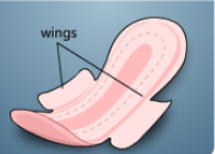

Different Types of Sanitary Napkins

This type of sanitary napkin comes equipped with wings, providing additional side protection to prevent leaks and offer a more secure and comfortable fit.
Designed for reliable comfort, sanitary napkins without wings offer effective absorbency without the additional side flaps.
Tailored for heavier flow days, maxi-super sanitary napkins offer enhanced absorbency and extended coverage.
A panty liner is a thin and lightweight option, ideal for everyday use and light flow days. Offering discreet protection, panty liners are designed to provide a fresh and clean feeling.
Sanitary napkin with wings
Sanitary napkin without wings
Maxi-super sanitary napkin
Panty liner